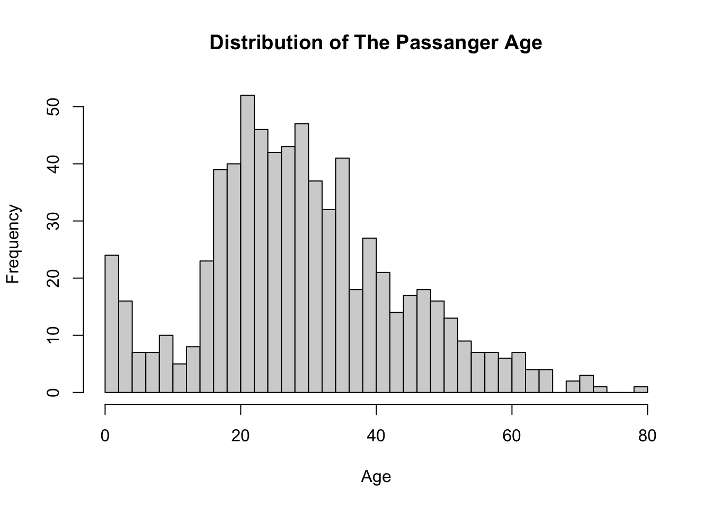

PassengerId Survived Pclass
1 1 0 3
2 2 1 1
3 3 1 3
4 4 1 1
5 5 0 3
6 6 0 3
Name Sex Age SibSp Parch
1 Braund, Mr. Owen Harris male 22 1 0
2 Cumings, Mrs. John Bradley (Florence Briggs Thayer) female 38 1 0
3 Heikkinen, Miss. Laina female 26 0 0
4 Futrelle, Mrs. Jacques Heath (Lily May Peel) female 35 1 0
5 Allen, Mr. William Henry male 35 0 0
6 Moran, Mr. James male NA 0 0
Ticket Fare Cabin Embarked
1 A/5 21171 7.2500 S
2 PC 17599 71.2833 C85 C
3 STON/O2. 3101282 7.9250 S
4 113803 53.1000 C123 S
5 373450 8.0500 S
6 330877 8.4583 Q
stargazer(titanic_data, type ="text")
==============================================
Statistic N Mean St. Dev. Min Max
----------------------------------------------
PassengerId 891 446.000 257.354 1 891
Survived 891 0.384 0.487 0 1
Pclass 891 2.309 0.836 1 3
Age 714 29.699 14.526 0.420 80.000
SibSp 891 0.523 1.103 0 8
Parch 891 0.382 0.806 0 6
Fare 891 32.204 49.693 0.000 512.329
----------------------------------------------
Exercise 1: Basic data wrangling with R
Sort the data frame by Age in descending order, such that the first observation is the passenger with the highest age.
# The NA ages will be on the last.titanic_data <- titanic_data[order(titanic_data$Age, decreasing =TRUE),]# The oldest passanger nametitanic_data[1,"Name"]
[1] "Barkworth, Mr. Algernon Henry Wilson"
Exercise 2: Dealing with NAs
Investigate the structure of the data set using the command str(). Describe your findings. Next, remove all missing values using na.omit().
str(titanic_data)
'data.frame': 891 obs. of 12 variables:
$ PassengerId: int 631 852 97 494 117 673 746 34 55 281 ...
$ Survived : int 1 0 0 0 0 0 0 0 0 0 ...
$ Pclass : int 1 3 1 1 3 2 1 2 1 3 ...
$ Name : chr "Barkworth, Mr. Algernon Henry Wilson" "Svensson, Mr. Johan" "Goldschmidt, Mr. George B" "Artagaveytia, Mr. Ramon" ...
$ Sex : chr "male" "male" "male" "male" ...
$ Age : num 80 74 71 71 70.5 70 70 66 65 65 ...
$ SibSp : int 0 0 0 0 0 0 1 0 0 0 ...
$ Parch : int 0 0 0 0 0 0 1 0 1 0 ...
$ Ticket : chr "27042" "347060" "PC 17754" "PC 17609" ...
$ Fare : num 30 7.78 34.65 49.5 7.75 ...
$ Cabin : chr "A23" "" "A5" "" ...
$ Embarked : chr "S" "S" "C" "C" ...
From the above result, we can see that the data contains three data types: int, chr, and num (float). The num is reponsible for the non-integer numbers. Next, we exclude the rows with NA values
We could see that the records are reduced into 714 instead of 891.
Exercise 3: Basic visualization with R
Next, plot the distribution of the variable Age using the function hist().
hist(titanic_data$Age, breaks =40, xlab ="Age", main ="Distribution of The Passanger Age")

Exercise 4: Conditional means
How many people survived the Titanic?
table(titanic_data$Survived)
0 1
424 290
As we can see, there are 290 passengers who were survived (flagged with ‘1’). Furthermore, to know the distribution of survived passengers for each class as well as the embarked place, we can make a tabulation for each of them
Embarked
Survived C Q S
0 0 51 20 353
1 2 79 8 201
Here, we can see according to the ticket class, most of the survived passengers came from the first class. Furthermore, based on the embarked place, most of the survived passengers were from the “S”.